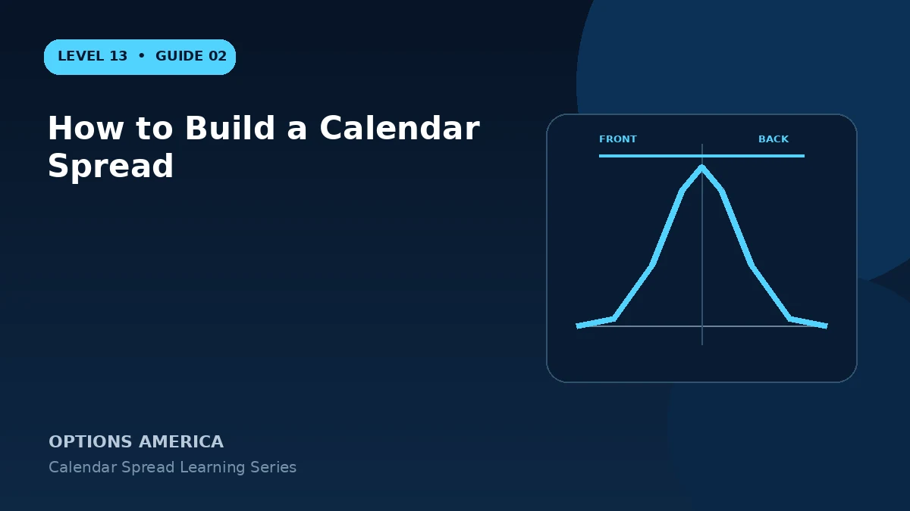

Build a calendar spread by choosing a target strike, selling the front expiration and buying the back expiration as one order.
Define the thesis
State the target price, expected timing and volatility view. The trade should explain why the underlying may remain near or move toward the strike and why back-month volatility should hold relative to the front month.
Choose matching options
Use the same underlying, option type, strike and quantity. Sell the nearer expiration and buy the later expiration, then verify that the order ticket shows a long calendar rather than a reversed short calendar.
Price the term structure
Compare the debit, implied volatility and extrinsic value in each expiration. A cheap-looking spread can reflect an unfavorable term structure or an event concentrated in the short option.
Enter and document
Use one multi-leg limit order. Record the target, maximum acceptable debit, profit objective, price exit, volatility exit, front-expiration plan and assignment procedures before sending.
A practical example
With stock at $99 and a $100 target, sell the 28-day 100 call and buy the 63-day 100 call together for a $1.65 debit.
This simplified example uses selected price, time and volatility assumptions; live results will differ. Live option prices also reflect the underlying price, time decay, rates, dividends, liquidity and transaction costs. Greeks are theoretical estimates, not guarantees.
Frequently asked questions
Which option is sold?
The nearer expiration.
Must the strike match?
A standard calendar uses the same strike; different strikes create a diagonal.
Why use one order?
It controls the net debit and avoids unintended single-leg exposure.
Continue the Calendar Spreads cluster
Explore related guides: Calendar Spread Profit, Loss and Breakeven · Call Calendar vs Put Calendar Spread · Theta and Time Decay in a Calendar Spread. For a structured sequence, use the free Level 13 – Calendar Spreads course.
Options involve risk and are not suitable for every investor. This material is educational and is not investment, tax or legal advice. Greeks are theoretical estimates, and contract terms and broker requirements can vary.